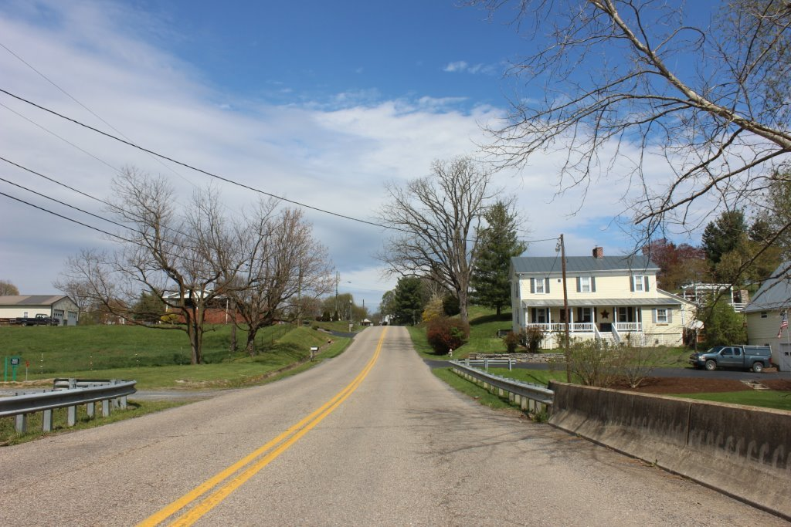

Most building and construction projects require some kind of permission from the town before the project can begin.
Please complete this application and submit it via email to townofmountcrawford@gmail.com as the first step in obtaining a building permit.
Also please view VA811.com, opens in a new tab for more information before you dig.
For all water and sewer projects, the Town's Water and Sewer Standards & Specifications must be used.